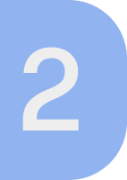
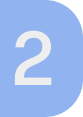
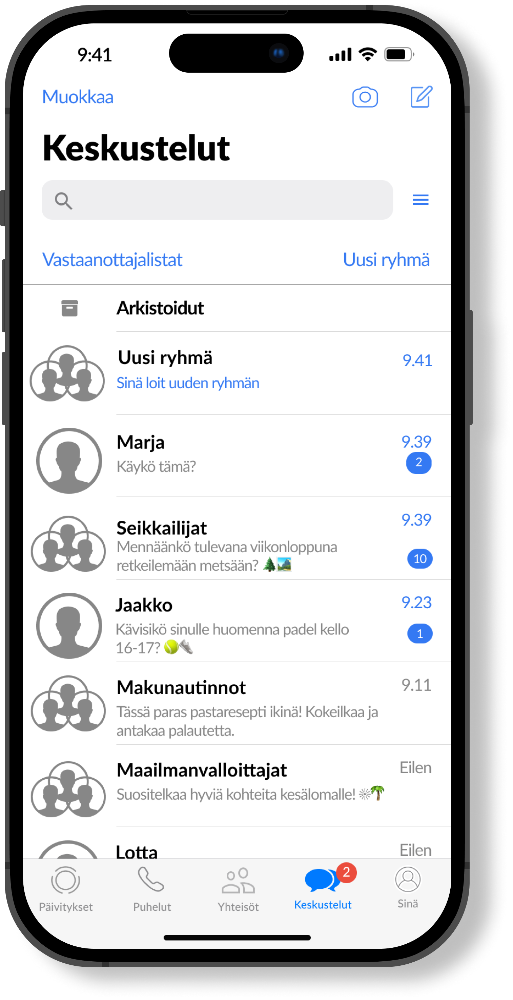
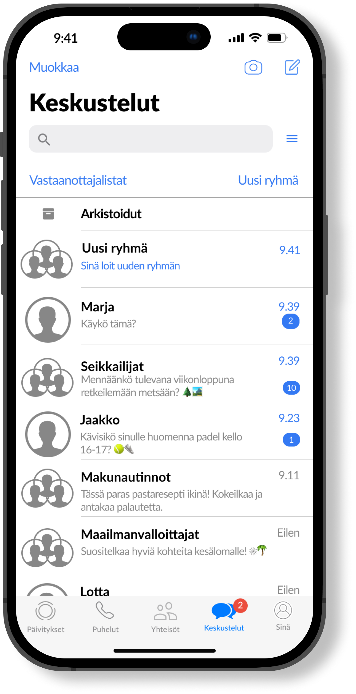

Tiimi: 4 henkilöä
Rooli: Tutkimukset, ideointi, visuaalinen suunnittelu
Kesto: 6 viikkoa
Ajankohta: Syksy 2023
Yleiskatsaus
Projektissa keskityimme parantamaan WhatsAppin käyttäjäkokemusta. Tutkimuksemme painottui käyttäjien kokemuksiin ryhmistä ja niiden hallinnasta. Lähtökohtanamme oli ymmärtää, näkevätkö käyttäjät epäaktiiviset ryhmät haitallisina ja miten voimme parantaa "Keskustelut"-sivun käyttökokemusta. Työmme kattoi tutkimuksen, ideoinnin, prototyyppien suunnittelun sekä ratkaisujen testaamisen. Lopputuloksena syntyi käyttäjäystävällisiä konsepteja ryhmien hallintaan ja parempaan käyttökokemukseen.
Ongelma
Epäaktiiviset ryhmät kasvattavat WhatsAppin etusivun pituutta
Moni meistä on varmasti huomannut, että WhatsApp-keskustelujen etusivu venyy pitkäksi, ja aika ajoin saattaa tulla vastaan vanha, tarpeeton ryhmä. Näitä ryhmiä kertyy paljon, eikä niiden poistaminen aina houkuttele. Kysymme itseltämme: Löytyisikö tähän parempi ratkaisu?
Ratkaisut
Yksityisviestien ja ryhmäviestien erottelu samasta näkymästä, omiksi näkymiksi

Selkeämpi erottelu omilla näkymillään parantaa sovelluksen selailun vaivattomuutta.
Lyhyemmät listat ryhmiä tai yksityishenkilöitä etsiessä tekevät käyttökokemuksesta sujuvamman.
Tärkeät viestit eivät jää varjoon aktiivisten ryhmien keskustellessa.
Poistamispäivämäärä ryhmän luonnissa
 

Luonnin yhteydessä tarjotaan mahdollisuus asettaa ryhmän poistamispäivämäärä.
Vähentää tarpeettomien ryhmien lisääntymistä, erityisesti epäaktiivisten ryhmien kohdalla.
Esimerkkinä: Ryhmän luonnin yhteydessä voi asettaa poistamispäivämäärän, vaikka juhlien suunnitteluryhmälle. Näin varmistetaan, ettei ryhmä jää tarpeettomana etusivulle pitkäksi aikaa juhlien jälkeen.

Kyselylomake
53% vastanneista ei häirinnyt epäaktiiviset ryhmät
Kyselyyn vastasi 68 henkilöä, joiden ikähaitari ulottui 16-vuotiaista yli 50-vuotiaisiin, ja vastaajien keski-ikä oli 21–30 vuotta. Kyselyn levitimme WhatsAppin kautta, sillä odotimme tavoittavamme riittävästi kohderyhmää kyseiseltä palvelualustalta. Tulokset yllättivät meidät, kun yli puolet vastaajista ilmoitti, etteivät heitä häirinneet epäaktiiviset ryhmät. Silti kyselystä nousi esiin yhtenäinen teema: käyttäjät toivoivat selkeämpää ja paremmin hallittavaa etusivun näkymää.
Haastattelu
Vanhoissa ryhmissä muistoja
Valitsimme haastateltaviksi seitsemän kyselyyn vastannutta henkilöä, jotka edustivat eri ikäryhmiä. Käytimme puolistrukturoitua haastattelumallia, jotta keskustelu voisi edetä rennosti ja haastateltavilla olisi mahdollisuus tuoda esiin omia näkemyksiään. Samalla varmistimme, että kerättävä data olisi vertailukelpoista. Haastatteluista kävi ilmi, että epäaktiivisia ryhmiä ei koeta haitallisina, sillä niitä saatetaan aika ajoin tarkastella nostalgisista syistä tai muistojen vuoksi.

Ideointi
Ryhmille parempaa hallintaa
Tutkimuksen tuloksista kävi ilmi, että suurin osa käyttäjistä ja kaikki haastateltavat eivät koe epäaktiivisia ryhmiä haitallisina, vaan pikemminkin pitävät niitä muistojen säilyttäjinä. Kuitenkin monet ilmaisivat kaipuunsa järjestelmällisemmälle tavalle hallita ryhmiä ja helppoutta poistaa tarpeettomat ryhmät. Näiden pohjalta lähdimme ideoimaan ratkaisuja.
Crazy 8-menetelmän avulla synnytimme ideoita, jotka järjestimme affiniteettikaavioon. Sieltä nousi esiin kolme pääteemaa:
Persoonat
Kolme käyttäjäpersoonaa
Yhteenveto tuloksista
Käyttäjät kaipasivat parannuksia ryhmien järjestelyyn
Tutkimustulokset osoittavat, että useimpia käyttäjiä eivät haittaa niinkään epäaktiiviset ryhmät, mutta ryhmien hallinnassa olisi tarvetta parannuksiin. Monilla käyttäjillä on erilaisia ryhmiä eri sovelluksissa, eikä heillä näytä olevan halua siirtää näiden ryhmien ominaisuuksia parantaakseen WhatsAppin ryhmiä. Tämä vihjaa siihen, että käyttäjät pitävät eri sovelluksia eri tarkoituksia varten.
Ratkaisukonsepti
Yksityisviestien ja ryhmäviestien jaottelu omiksi näkymiksi
Tutkimustulokset osoittavat, että useimpia käyttäjiä eivät haittaa niinkään epäaktiiviset ryhmät, mutta ryhmien hallinnassa olisi tarvetta parannuksiin. Monilla käyttäjillä on erilaisia ryhmiä eri sovelluksissa, eikä heillä näytä olevan halua siirtää näiden ryhmien ominaisuuksia parantaakseen WhatsAppin ryhmiä. Tämä vihjaa siihen, että käyttäjät pitävät eri sovelluksia eri tarkoituksia varten.
Ryhmän luoja voi halutessaan määrittää poistamispäivämäärän
Toinen ratkaisu liittyy käyttäjiin, jotka kokevat epäaktiiviset ryhmät haitallisiksi. Se sisältää asetuksen, jonka avulla voi asettaa ryhmän poistamispäivämäärän, esimerkiksi tapahtuman jälkeen. Näin vältetään turhien ryhmien kasaantuminen etusivulle ja viestilistaan.
 

Pohdinta ja opit
Mitä tekisin toisin ensi kerralla?
Tämä oli ensimmäinen käyttäjäkokemusprojektini. Huolimatta lopputuloksesta, olen valtavan kiitollinen siitä, että sain kokea koko käyttäjäkokemusprosessin ja nähdä, millaista se todella on. Tähän liittyen olen pohdiskellut muutamia asioita:
Kiitos lukemisesta!
Jos haluat keskustella lisää, ota rohkeasti yhteyttä sähköpostitse tai lähetä viestiä LinkedIn:issä!